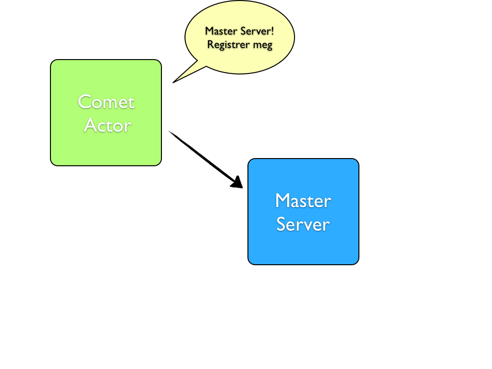
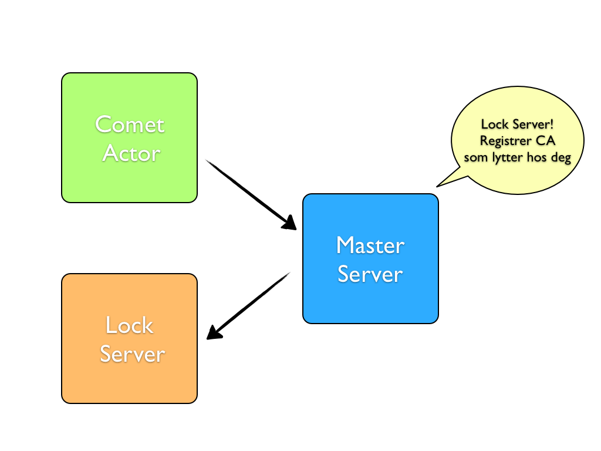
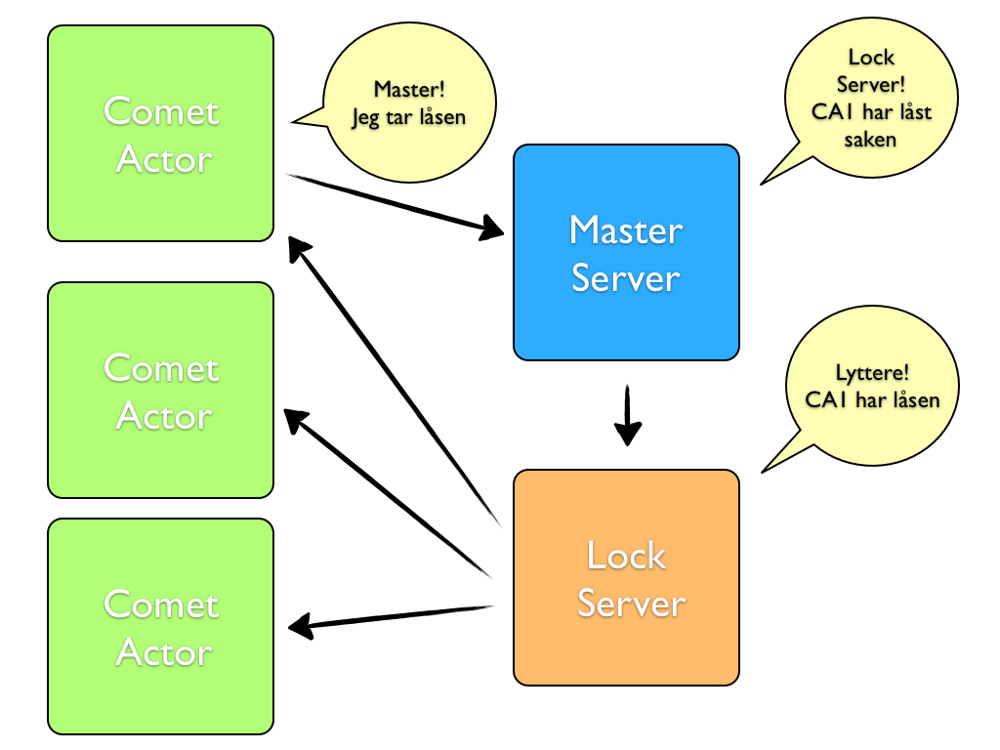

Lift Comet Actors
Introduksjon
- Lift: Web-rammeverk for Scala
- Comet Actors: Actor-implementasjon i Lift
- Formål: Oppdatere browser med push data
- Komponenter: Master Server - Lock Server - Comet Actor
- Demo: Låse saker i saksbehandling
Initialisering

Embedded Actor
En vanlig Lift Snippet
<div class="lift:CaseLockSnippet.view?caseIdent=1;userIdent=1">
Første actor opprettes ved initiell request
class CaseLockSnippet {
def view = {
val caseIdent = S.attr("caseIdent") openOr ""
val userIdent = S.attr("userIdent") openOr ""
"*" #>
<div id="lockActorContainer"
class={"lift:comet?type=CaseLockCometActor;name="+
Seq(caseIdent, userIdent).mkString("_")}> ...
Registrere hos Master
Actor'en registerer seg hos master serveren
class CaseLockCometActor extends
CometActor with CometListener {
private lazy val lockMasterServer = CaseLockMasterServer
override def registerWith = lockMasterServer
}

Registrere hos Lock Server
Lock Server opprettes av Master, og Actoren registreres som lytter
object CaseLockMasterServer extends LiftActor {
private val servers = new HashMap[Int, ListenerManager]()
def createServer(cometActor: CA) =
new CaseLockServer(cometActor.caseIdent)
protected def messageHandler: PartialFunction[Any, Unit] = {
case addAListener @ AddAListener(cometActor: CA, _) =>
val op = createServer(cometActor)
val server = servers.getOrElseUpdate(key(cometActor), op)
server ! addAListener
}
}
Låsemeldinger

Låsing av ulåst sak
Callback fra hengelåsen trigger sending av melding til Master
def toggleLock = {
currentCase.foreach(c => {
if (c.isLockedByMe) {
c.lockedBy = None
lockMasterServer ! UnLockCase(c)
} else {
c.lockedBy = Some(userIdent)
lockMasterServer ! LockCase(c)
}
})
}
Velg riktig Lock Server
Masterserveren sender melding videre til riktig server
protected def messageHandler = {
case lc @ LockCase(casen) =>
get(casen.ident).foreach(server => server ! lc)
case ulc @ UnLockCase(casen) =>
get(casen.ident).foreach(server => server ! ulc)
}
Videresending av melding
Lock Server oppdaterer sine lyttere
override def lowPriority = {
case lc: LockCase =>
updateListeners(lc)
case ulc: UnLockCase =>
updateListeners(ulc)
}
Oppdatering av låsikon
Actorene oppdaterer låsikonet sitt ved hjelp av
Javascript
override def lowPriority = {
case LockCase(casen) if (casen.ident == caseIdent) => {
currentCase = Some(casen)
val lockStatusJs: JsCmd = casen match {
case c: Case if c.lockedBy.exists(_ == userIdent) =>
Call("LockTracker.greenLock", uniqueId)
case c: Case =>
Call("LockTracker.redLock", uniqueId)
}
partialUpdate(lockStatusJs)
}
}
Konklusjon
- Comet for free
- Scalakode
- Asynkront
- Asynkront
- Når skal en server fjernes?
- Deadlock